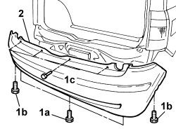
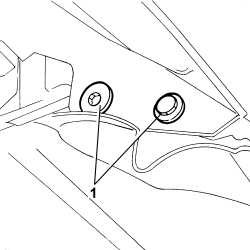
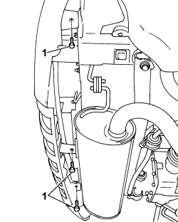
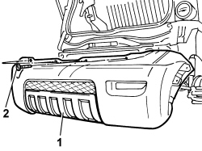

7210E66 REAR BUMPER
- Path
- Procedures > 72 PANELS AND FRAME > 7210 REMOVING REFITTING > 7210E EXTERNAL PARTS > 7210E66 REAR BUMPER
- Kind
- repair procedure (removal / refitting; the operation number is the code)
- Applies to
- all engines; all production periods
- Interactive page
- https://sloeber94.github.io/elrnDB-fPnd/en/#/2753363
Applies to: all engines; all production periods
 Removing
Removing
 Refitting
Refitting
Applies to: engines: 1.3 JTD 16v; all production periods; only with equipment: SUV
Removing
RefittingPosition the vehicle on a lift.
Op. 4450B06 LEFT REAR WHEEL R R
Op. 4450B08 RIGHT REAR WHEEL R R
Op. 7055B48 REAR WHEEL ARCH LINER (ONE), LEFT OR RIGHT - R.R.
[Both]
Op. 7055A26 MOULDING ON REAR WHEEL ARCH (ONE) LH OR RH R R
[Both]
Applies to: engines: 1.3 JTD 16v; all production periods; only with equipment: SUV
1. Working in the wheel arch compartments, unscrew the side bolts.

Applies to: engines: 1.3 JTD 16v; all production periods; only with equipment: SUV
1. Undo the lower fixing bolts.

Applies to: engines: 1.3 JTD 16v; all production periods; only with equipment: SUV
1. Undo the upper retaining bolts.
2. Remove the bumper.
Applies to: engines: 1.3 JTD 16v; all production periods; only with equipment: SUV
Refitting
Removing1. Position the bumper in its seat.
2. Tighten the upper fixing bolts.

Applies to: engines: 1.3 JTD 16v; all production periods; only with equipment: SUV
1. Tighten the lower fixing bolts.

Applies to: engines: 1.3 JTD 16v; all production periods; only with equipment: SUV
1. Working from the wheel arch compartments, tighten the side bolts.

Applies to: engines: 1.3 JTD 16v; all production periods; only with equipment: SUV
Op. 7055A26 MOULDING ON REAR WHEEL ARCH (ONE) LH OR RH R R
[Both]
Op. 7055B48 REAR WHEEL ARCH LINER (ONE), LEFT OR RIGHT - R.R.
[Both]
Op. 4450B08 RIGHT REAR WHEEL R R
Op. 4450B06 LEFT REAR WHEEL R R
Remove the vehicle from the lift.